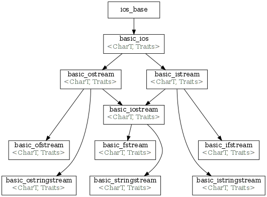

Input/output library
From Cppreference
< cpp
| C++ Standard Library | ||||||||||||
|---|---|---|---|---|---|---|---|---|---|---|---|---|
| ||||||||||||
| Input/output library | ||||||||||||
Standard input/output library is organized in such a way that the underlying device of an input/output operation is abstracted. In this way the same code can handle input/output to a file, memory stream, or custom adaptor device interpreting the data on the fly, e.g. compressing it. Most of the classes are templated, so they can be adapted to any basic character type. Separate typedefs are provided for the most common basic character types (char and wchar_t).


Inheritance diagram
The library consists of the following elements:
- Abstraction:
- raw device abstraction class:
- classes that act as a wrapper for a given abstract device and provide high level input/output interface:
- basic_istream (input stream)
- basic_ostream (output stream)
- basic_iostream (input/output stream)
- These classes internally inherit several utility classes:
- Implementation:
- file based streams:
- basic_filebuf (raw file device implementation)
- basic_ifstream (input file stream)
- basic_ofstream (output file stream)
- basic_fstream (input-output file stream)
- string based streams:
- basic_stringbuf (raw string device implementation)
- basic_istringstream (input string stream)
- basic_ostringstream (output string stream)
- basic_stringstream (input-output string stream)
[edit] Typedefs
The following typedefs for common character types are provided:
typedef basic_streambuf<char> streambuf; typedef basic_streambuf<wchar_t> wstreambuf; typedef basic_filebuf<char> filebuf; typedef basic_filebuf<wchar_t> wfilebuf; typedef basic_stringbuf<char> stringbuf; typedef basic_stringbuf<wchar_t> wstringbuf; typedef basic_istream<char> istream; typedef basic_istream<wchar_t> wistream; typedef basic_ostream<char> ostream; typedef basic_ostream<wchar_t> wostream; typedef basic_iostream<char> iostream; typedef basic_iostream<wchar_t> wiostream; typedef basic_ifstream<char> ifstream; typedef basic_ifstream<wchar_t> wifstream; typedef basic_ofstream<char> ofstream; typedef basic_ofstream<wchar_t> wofstream; typedef basic_fstream<char> fstream; typedef basic_fstream<wchar_t> wfstream; typedef basic_istringstream<char> istringstream; typedef basic_istringstream<wchar_t> wistringstream; typedef basic_ostringstream<char> ostringstream; typedef basic_ostringstream<wchar_t> wostringstream; typedef basic_stringstream<char> stringstream; typedef basic_stringstream<wchar_t> wstringstream;
Predefined standard stream objects:
extern istream cin; //standard input (stdin) extern wistream wcin; extern ostream cout; //standard output (stdout) extern wostream wcout; extern ostream cerr; //standard error (stderr) extern wostream wcerr; extern ostream clog; //standard log (stdlog) extern wostream wclog;
[edit] Manipulators
Several manipulators are defined to control the formatting of input/output operations on streams.
| This section is incomplete |